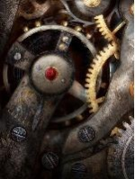

Косяки с логикой.
Страница 13 из 15 •  1 ... 8 ... 12, 13, 14, 15
1 ... 8 ... 12, 13, 14, 15

7dl-kun- Находка для шпиона

- Сообщения : 3026
Дата регистрации : 2014-09-07
Откуда : здесь столько наркоманов?
Re: Косяки с логикой.
автор nuttyprof в Вт 23 Июн 2015 - 18:54
Версия 1.1, релиз 019h
- день 2:
Ситуация - обход лагеря с бегунком, договорились с Алисой, она ждет у музклуба.
Если сразу после этого зайти на на площадь (Семён пока один) - встречает Славя и припахивает подметать.
строка 3021:
строка 3027:Славя пишет: Как ваши дела? Много уже обойти успели?Славя пишет: Поможете мне прибраться? Тут немного, втроём мигом справимся.
т. е. в этих строках Славя обращается к двум персонажам, что не есть логично.
Далее Славя обращается к одному Семёну, как по логике и должно быть.

nuttyprof- Хикка

- Сообщения : 102
Дата регистрации : 2015-05-25
Возраст : 45
Откуда : Юг
Re: Косяки с логикой.
автор nuttyprof в Ср 24 Июн 2015 - 18:59
Версия 1.1, релиз 019h + хотфикс1
День 2. Обход лагеря с бегунком.
- немножко жуков:
номера строк - по файлу из хотфикса.
Строки 987..989. Шурик говорит о "руководителе музыкального кружка" (в строке 1684) если: ЗАПИСАТЬСЯ в газету и НЕ записываться к кибернетикам, а не просто посетить библиотеку и клуб.
Строки 1663..1680. Отмазки от вступления к кибернетикам упоминаются, только если ходили со Славей.
во всех других случаях - "Я вообще ещё никуда не вступил", хотя вполне себе мог.
Например - обход в одиночку - библиотека - вступил в стенгазету к Шурику - клубы - не вступать = Семен говорит Шурику, что никуда не вступил - и следом - «а у меня задание от тебя».
Строка 1499 - должно проверяться еще условие, что Алиса ждет (4) - иначе фраза в 1500 не логина для одного Семена.
Строка 1553 - должно проверяться еще условие, что Алиса ждет (4) - иначе фраза в 1554 не логична для одного Семена.
Строка 2119 - должно проверяться еще условие, что Алиса ждет (4) - иначе фраза в 2122 не для одного Семена.
Поскольку после посещения четырех значимых локаций однозначно выходим на эстраду (без выбора на карте):
перед выходом на эстраду странновато выглядят фразы после посещения четвертой по порядку значимой локации наподобие
"Я усмехнулся и прикинул, куда двигаться дальше."
строки 1371, 1382, 1390 - не логичны, если музкружок посещаем четвертым;
строка 1712 - не логичны, если кружок кибернетиков посетили четвертым;
строки 1996, 2006, 2014, 2021 - не логичны, если спортзал посетили четвертым;
строки 2415, 2423 - не логичны, если библиотека посещена четвертой;
строки 2649, 2659, 2668, 2673 - не логичны, если медпункт посетили четвертым.
Строка 1435 - не логична, если кружок кибернетиков посещается первым.
(при условии, что север карты вверху)
Строки 2095, 2097 - логичны, если выходить на библиотеку из медпункта, с площади, из спортзала (напрямую) и, с натяжкой,
из столовой (с Леной, Славей или самому).
с остальных локаций до библиотеки, скажем так, не ближе всего; если же с Алисой несли усилитель на эстраду - то к библиотеке вообще на юг получается.
строка 2540 - «Из-за стола в дальней части кабинета вышла невысокая, но крайне фигуристая разноцветноглазая девица."»
КМК, фраза построена так, как будто Семен Виолу первый раз видит. В первый день же рассмотрел ее он, да и утром в столовой тоже видел и узнал.
строка 2672 - me "А меня зовут Семён."
вроде бы в первый день (строка 1202) Славяна представляла Семена Церновне.
Строка 1338 - Семен говорит Мику что он по духовым, только если записывается в кружок.
Дальше, в 3 дне (строка 2868) идет ссылка на этот разговор, без проверки условий, что нелогично.
Строки 3068-3074. По поводу припахивания Семена Славей к уборке площади.
это момент проходной и, так понимаю, безальтернативный (кроме Локи, тот всяко отмазывается).
Ладно бы все прочие расклады - но когда ждет Алиса - нелогично.
Как я понял, она готова ждать недолго (одно посещение знаковой локации); времени на уборку тратится немало.
Фиг бы с ним с дрищом - на то он и дрищ, чтоб припахали; его мнением по ходу игры мало где интересуются.
Поведение герка в этой ситуации - нелогично; его там, понимаешь, девушка ждет, а он....
Может, есть смысл ввести для герка выбор: помочь/не помогать?
и если помогать согласился - полный пролет с Алисой.
Да и для дрища - аналог посещения знаковой локации, т. е. один заход куда-то еще + площадь = пролет у Алисы.
строки 3144..3146. По вожатой
Видели мы… Их работу."
"Судя по довольному выражению лица, вкалывает наша Олечка без роздыху то на пляже, то на пристани."
Это ТОЛЬКО если пляж посещали - то да, видели, иначе - нет. И на пристани не наблюдалась ОД.
nuttyprof- Хикка
- Сообщения : 102
Дата регистрации : 2015-05-25
Возраст : 45
Откуда : Юг
Re: Косяки с логикой.
автор Mihaello в Пт 3 Июл 2015 - 19:50
Mihaello- Ньюфаг

- Сообщения : 7
Дата регистрации : 2015-07-01
Re: Косяки с логикой.
автор Demiurge-kun в Ср 15 Июл 2015 - 18:59
И надо же, ГГ не узнал Ульянку в доме вожатой, хотя та облила его минутой ранее... Судя по всему что-то пошло не так...
Дрищ, пойду милая, промолчать после Славиного приветствия, а дальше заверте...

Demiurge-kun- Хикка
- Сообщения : 216
Дата регистрации : 2014-09-13
Re: Косяки с логикой.
автор Demiurge-kun в Ср 22 Июл 2015 - 23:25
Первый:
Д3, зарядка. Семен в одной из мыслительных реплик(в какой - запамятовал, но помню, что в этот момент стоял спрайт Ульяны) говорит о себе в женском роде. Судя по всему опечатка. И, да, лучше будет Ульяну в этом дне сразу нарядить в СССРку, а то удивительно ловко она переоделась, пока мы бежали с ней от ОД на зарядку.
Второй:
Д3, танцы, танцевал Мику, та упоминает пляж(в теории - вечер после турнира), хотя я там, теоретицки не был(воообще-то был, но до начала "действия" отмотал обратно, возможно причина в этом)
Весьма впечатлен прохождением, хоть и не вышел на ЮВАО-рут, как хотел. Судя по трейсбэку и диалогу с ОД на танцах(что удивительно, выбора удрать или нет не последовало), меня кинуло на сыч-ветку. Будем пробовать еще раз
Demiurge-kun- Хикка
- Сообщения : 216
Дата регистрации : 2014-09-13
Re: Косяки с логикой.
автор Chess в Ср 22 Июл 2015 - 23:30
Ну как так-то?! Ты ж начало четвёртого дня самолично писал, и баббл рабочий постоянно перед глазами!Весьма впечатлен прохождением, хоть и не вышел на ЮВАО-рут, как хотел. Судя по трейсбэку и диалогу с ОД на танцах(что удивительно, выбора удрать или нет не последовало), меня кинуло на сыч-ветку. Будем пробовать еще раз Smile

Chess- Находка для шпиона
- Сообщения : 3798
Дата регистрации : 2014-10-05
Откуда : Город на краю света
Re: Косяки с логикой.
автор Demiurge-kun в Ср 22 Июл 2015 - 23:42
Demiurge-kun- Хикка
- Сообщения : 216
Дата регистрации : 2014-09-13
Re: Косяки с логикой.
автор Chess в Ср 22 Июл 2015 - 23:46
Chess- Находка для шпиона
- Сообщения : 3798
Дата регистрации : 2014-10-05
Откуда : Город на краю света
Re: Косяки с логикой.
автор Demiurge-kun в Чт 23 Июл 2015 - 8:28
Demiurge-kun- Хикка
- Сообщения : 216
Дата регистрации : 2014-09-13
Re: Косяки с логикой.
автор 7dl-kun в Чт 23 Июл 2015 - 10:01
7dl-kun- Находка для шпиона
- Сообщения : 3026
Дата регистрации : 2014-09-07
Откуда : здесь столько наркоманов?
Re: Косяки с логикой.
автор Nenil в Пт 24 Июл 2015 - 0:21
Nenil- Ньюфаг
- Сообщения : 10
Дата регистрации : 2015-07-12
Re: Косяки с логикой.
автор openplace в Сб 25 Июл 2015 - 20:10
6446 "Сектор Газа? Если ничего не путаю, они ещё только ВЫПУСТЯТ эту песню."
А меж тем там звучит "Сплин". Файл lyrica_sg в наличии есть, но не задействован. Видимо, лучше так:
- Спойлер:
- Код:
label alt_day2_eventEv_estrade:
scene cg d3_dv_guitar with fade
stop music fadeout 1
window show
"На самом краешке сцены сидела Алиса с гитарой наперевес."
"Она что-то мурлыкала себе под нос и меланхолично перебирала струны."
"Перебор был почему-то очень знакомым…"
if alt_day2_loki_minijack:
play music splin fadein 5
"Сплин? Серьёзно?"
"Двачевская на соло-гитаре подбирает переборы «Романса»?"
"Некоторые люди определённо понимают толк в извращениях."
else:
play music lyrica_sg fadein 5
"Сектор Газа? Если ничего не путаю, они ещё только ВЫПУСТЯТ эту песню."
"Откуда она её знает?"
window hide
Ещё - день 3, танцы, label alt_day3_dance_dance
8552 "Я устроился на лавочке неподалёку от мурлыкающих «Пастуха» чёрных кубиков «Ломо» и насвистывал мелодию, когда ко мне подошли два оболтуса-кибенематика."
А звучит ambience ambience_camp_center_evening.
Опять же, файл lonesome_shepherd есть, но не задействован. Логично, если "Одинокий пастух" будет слышен хотя бы на протяжении хода строчек 8551-8612.

openplace- Хикка
- Сообщения : 111
Дата регистрации : 2015-05-02
Re: Косяки с логикой.
автор openplace в Сб 25 Июл 2015 - 20:51
openplace- Хикка
- Сообщения : 111
Дата регистрации : 2015-05-02
Re: Косяки с логикой.
автор 7dl-kun в Сб 25 Июл 2015 - 22:02
7dl-kun- Находка для шпиона
- Сообщения : 3026
Дата регистрации : 2014-09-07
Откуда : здесь столько наркоманов?
Re: Косяки с логикой.
автор nuttyprof в Пн 27 Июл 2015 - 5:00
- Не иначе Ульянка постаралась, в сычерут жуков подпустила:
файл alt_zneutral_route.rpy
строка
3729: "Мика и Алиса". - Мику?;
3830: "... выпороть пионер." - пионера (ов)?;
nuttyprof- Хикка
- Сообщения : 102
Дата регистрации : 2015-05-25
Возраст : 45
Откуда : Юг
Re: Косяки с логикой.
автор openplace в Чт 30 Июл 2015 - 1:43
Если происходит if alt_day3_dv_reunion or (alt_day2_rendezvous == 3 and not alt_day3_dv_dj) (315-353), то вопросов не возникает, потому что встреча Семёна и Алисы расписана.
Однако того, как происходит if alt_day3_dv_date (261-285), идёт переход на alt_day4_neu_dv_morning. Сразу же. 483: "Пробравшись какими-то непонятными тропинками, мы оказались на небольшой площадке вытоптанной травы, со всех сторон окружённой плотными зарослями." Возникает вопрос: а как они вообще в таком случае пересеклись-то, чтобы потом вместе пойти к этой импровизированной площадке?
openplace- Хикка
- Сообщения : 111
Дата регистрации : 2015-05-02
Re: Косяки с логикой.
автор Imperfect Machine в Пт 31 Июл 2015 - 19:15
- Спойлер:
- Я бы предложил или в сцену с экскурсией добавить опрокинутое ведро с лужей неподалёку и диалог заодно. Чтобы органичнее - Славя об него запнулась пока бежала.
Ну, или из этого диалога достаточно поправить пару фраз.

Imperfect Machine- Ньюфаг
- Сообщения : 6
Дата регистрации : 2015-07-31
7dl-kun- Находка для шпиона
- Сообщения : 3026
Дата регистрации : 2014-09-07
Откуда : здесь столько наркоманов?
Re: Косяки с логикой.
автор HOXAJI в Пн 3 Авг 2015 - 5:32
Итак.
- Спойлер:
- Сразу оговорюсь что могу со строками немного напутать, тк в своем коде небольшие изменения делал.
Класик-рут Мику.
строка
248 cs "Я слышала, вы в карты играли, и ты даже показал достойный результат."
Если позорно слить партию Лене, то это назвать достойным результатом сложно. Думаю если сделать так, будет лучше.- Код:
"Она достала из кармана колоду."
if alt_day2_fail != 1:
cs "Я слышала, вы в карты играли, и ты даже показал достойный результат."
"Я неопределённо пожал плечами."
cs "Сыграем."
cs "Если победишь ты - я отпущу тебя гулять до самого ужина."
--------------------------------------------------------------------
907 th "Кстати, привет она мне так и не передала."
Если отговорить Мику от того чтобы она сидела в радиорубке, то она и не обещает передать привет.- Код:
if alt_day4_mi_mi2midj_transit = True:
th "Кстати, привет она мне так и не передала."
--------------------------------------------------------------------
2781 label alt_day4_mi2sl_mi
Тут проблема в заднике. на данный лейбл кидает из 2х мест: Когда тебя Виола посылает со Славей из медпункта и когда ты сам приходишь из медпункта после дежурства.
в первом случае мы идем медпункт - крыльцо - столовая
во втором - медпункт - столовая - крыльцо - столовая.
хотя во втором случае нам не надо выходить на крыльцо.
Можно исправить, если перенести "выход на крыльцо" на пару сток выше (туда где ты идешь со Славей из меда)
--------------------------------------------------------------------
821 me "Чёрт его знает, где Алиса взяла столько спиртного, чтобы аж углем запасаться, но…"
наверно me лишнее, подразумевается что фраза произноситься в голове?
--------------------------------------------------------------------
2119-2128
if not alt_day4_mi_rival_won:
th "О, шиза проснулась. Значит, быть беде."
dreamgirl "Электроник не врал, когда говорил о неком гудении. Помнишь, когда поправляли провода, в оконце можно было углядеть любопытную решеточку, в оплетке из проводов?"
th "Ага, и?"
"Больше перекрёстков не встречалось, и это внушало надежду."
dreamgirl "Ты-то не помнишь, а вот у меня доступ ко всей твоей памяти, в частности, к выпуску «техники молодёжи», где описывалось, как из ведра, динамика и решётки можно было собрать пугало для пьяных."
th "Погодь… Инфразвуковой эмиттер?!"
dreamgirl "Ну!"
th "И мы под ним сидели?!"
dreamgirl "Хуже всего, что под ним Мику сидеть будет, а на женский организм сверхнизкий звук куда злее влияет. Короче, неизвестно кто и зачем так эту дрянь разместил, а выключить её надо."Если мы НЕ выигрываем в карты, мы сидим в медпункте весь день и с Элом не говорим. может это отсылка разговор в другие дни? но я не помню такого.
Решение: измени условие:
- Код:
if alt_day4_mi_rival_won and day4_mi_mi2midj_transit:
Вообще я фигню понаписал. Если мы уходим на дж_рут то и этого монолога нет, тк мы не идем искать Шурика. по хорошему его бы вообще удалить.
--------------------------------------------------------------------
1198
me "Собирайся, пошли."
el "Не-а."
me "Что? Ты не хочешь найти своего друга?"
el "Очень хочу. Но меня связывают целых два обещания - данное Виолетте Церновне и данное Мику."
el "На первое я могу ещё наплевать - мол, неправильно понял. Но Мику недвусмысленно сказала, что прибьёт меня на месте, если что."
"Электроник развёл руками."
el "Так что прости."
"Хрен с тобою, золотая рыбка. Сделаю вид, что ты меня убедил."
Это или я глупый, или бред написан. Эл давал обещания какие то? а если имена перепутаны, то получается что Эл заставляет нас идти с ним? называет Шурика нашим другом. тоже на правду не похоже.
--------------------------------------------------------------------
3314 me "Как отблеск от пожара закат меж сосен пляшет… Ты что грустишь, бродяга, а ну-ка, улыбнись…"
Простите я такой песни не знаю. может все же:- Код:
Как отблеск от заката костер меж сосен пляшет
--------------------------------------------------------------------
3516 "Июль восемьдесят девятого. Семён Персунов. Эта запись свидетельствует о том, что я действительно существую... блаблабла"
Если роль Герка то Семен Сычёв должен быть. Или Локи? я в них запутался уже. но факт тот что имена разные у них.
На этом вроде все по Мику-класик руту. надеюсь что помог. там есть еще пару косяков в разговоре в шахтах, но к ним вернусь когда кое-кто возьмется дописывать рут целиком.

HOXAJI- Ньюфаг
- Сообщения : 13
Дата регистрации : 2015-08-02
Re: Косяки с логикой.
автор HOXAJI в Вт 4 Авг 2015 - 4:10
И первое что не понравилось: что за тебя решают куда пойти с утра. По какому приоритету отдавалось предпочтение тому или иному кружку? я может хочу с Мику поболтать а меня насильно на футбол тянут.
Я не совсем понял как работают скрипты с картой. Могу попробовать переписать этот момент, так как мне кажется лучше будет. а там понравится - заменят, не понравится - не страшно, не обижусь.
============================
Итак спустя пару часов кое-что получилось.
Пока туфта полная, но работает. Завтра или доделаю ее, или разберусь с картой и сделаю карту.
- Спойлер:
- Код:
label alt_day4_neu_act_selector:
if not (alt_day2_club_join_badmin or alt_day2_club_join_footbal or alt_day2_club_join_volley or alt_day2_club_join_cyb or alt_day2_club_join_musc or alt_day2_club_join_nwsppr):
"Так как никуда записываться я совсем не спешил, а изобразить видимость занятости надо было - я отправился в библиотеку."
jump alt_day4_neu_lib
else:
"Итак, чем бы заняться?"
menu:
"Спортом!" if alt_day2_club_join_badmin or alt_day2_club_join_footbal or alt_day2_club_join_volley:
if alt_day2_club_join_badmin:
"Позавчера я зачем-то записался в секцию бадминтона."
"Такое ощущение, что для этой чопорный игры нужна отдельная дисциплина."
"Так или иначе, ноги вывели меня к корту."
window hide
$ persistent.sprite_time = "day"
scene bg ext_playground_day
with dissolve
play ambience ambience_soccer_play_background fadein 3
window show
"В огороженном квадрате уже кто-то был."
"Лена."
"Она была одета в спортивную форму и раз за разом чеканила воланчик, ударяя резко и отрывисто."
if alt_day2_date == 1:
"И била она уже куда увереннее, чем позавчера."
me "Привет."
"Негромко поздоровался я."
show un shy sport with dspr
"Лена уже привычно смутилась, но далеко не так сокрушительно, как я привык - даже воланчик не упустила."
un "П-привет."
"Девушка подождала немного и, видимо, сочтя разговор исчерпанным, продолжила чеканку."
me "Эм… Кхм… Играешь?"
"Верх интеллектуальных высказываний."
show un normal sport with dspr
un "Д-да… Сегодня теннисисты отдыхают, так что…"
me "А, ясно."
"Вот и поговорили."
show un shy sport with dspr
un "Н-не хочешь?"
"Лена, всё ещё красная, старательно смотрела мимо меня."
me "А можно?"
"Её улыбка могла стать эталонной иллюстрацией ко слову «неуверенная»."
"Но ракеткой девушка взмахнула крайне красноречиво."
"Видимо, это следует расценивать как разрешение."
"Я зашёл на корт и, выбрав себе ракетку по весу и удобству, занял место на красном гравии."
un "Начинаем!"
play music music_list["went_fishing_caught_a_girl"] fadein 5
show un smile sport with dspr
"И куда только делась стеснительная пионерка."
un "Первая подача!"
"В глазах «шараповой» зажглись азартные огоньки."
"С первой же подачи Лена дала мне понять, что настроена крайне решительно."
play sound sfx_tennis_serve_1
"У малолетней бадминтонщицы оказалась крайне тяжёлая рука, доставать воланчик приходилось частенько из импоссибл ситуаций, чуть ли не прыгая подобно голкиперу на воротах."
"То есть, вместо игры аристократов получилось крайне выматывающее действо, заставляющее выкладываться на все сто."
show un smile sport with dspr
un "Один-ноль в мою пользу! Отдай мне воланчик, моя подача."
"Речи о том, чтобы поддаться, даже не заходило — самому бы вровень удержаться!"
"Лена была достаточно гибкой, чтобы реагировать на любые мои подачи, к счастью, руки у меня были всё ещё достаточно длинные."
"Даже удалось отыграть несколько очков, срезав несколько «свечек» над самой сеткой."
"Но мы оказались в несколько разных лигах."
"Как оказалось, бадминтон тоже не относится к тем видам занятий, что получаются хорошо с первых же секунд."
"Опыт решает и здесь."
show un smile2 sport with dspr
un "Соберись. Ты же не хочешь проиграть девчонке?"
"Ноги на ширине плеч, полусогнуты, ракетка замерла в правой руке, готова отражать атаку на все 360°."
un "Потому что мне поддавки не нужны."
"Стеснительности как ни бывало. {w}Все эти глупости, вроде смущения или неловкости, остались по ту сторону рабицы."
"Наверное, такой Лена бывает лишь наедина сама с собой… Или с самыми близкими друзьями."
"Не то, чтобы я не ценил оказываемое доверие."
"Но гоняла она меня как хотела."
"Разрыв потихоньку увеличивался — мне перестало хватать дыхания, от кислородного опьянения немного подрагивали руки, потемнело в глазах."
"И всё хотелось сплюнуть тягучую слюну, но было как-то неловко перед девочкой."
"Так что я бодрился и крепился, зевая подачу за подачей, пока с той стороны сетки не прилетело."
show un normal sport with dspr
un "Партия."
"Лена улыбнулась мне, посмотрела в глаза…"
"И тут же спохватилась, вздрогнула, покраснела — вспомнила о том, какие у нас взаимоотношения."
un "Спасибо за игру."
me "Д-да…"
th "Уйди уже, наконец, и дай мне плюнуть!"
un "Увидимся."
hide un with dissolve
"Будто услышав мысленный посыл, она положила ракетку на стенде и, кивнув мне, направилась к выходу с корта."
play music eat_horn
"А от столовой между тем донёсся приснопамятное «бери ложку»."
"И я ощутил вдруг, как сильно проголодался."
stop music fadeout 3
jump alt_day4_neu_dinner
elif alt_day2_club_join_footbal:
"Помнится, я записывался в футбольный кружок."
"Я направился на футбольное поле."
window hide
$ persistent.sprite_time = "day"
scene bg ext_playground_day
with dissolve
play ambience ambience_soccer_play_background fadein 3
window show
"К несчастью, там снова никого не было - все пионер были заняты родителями."
"Хотя… На корте было заметно какое-то движение."
"Подойдя поближе, я обнаружил, что площадка была переоборудована под игру в «квадрат»."
"Ульяны тут не было."
me "Эй, ребят, место есть?"
ml "Сам-то как думаешь?"
"Хмуро отозвался один из мальцов, перекидывающих мяч."
"Намёк понял."
jump alt_day4_neu_act_selector
elif alt_day2_club_join_volley:
"Я хотел бы сыграть со Славей в волейбол, но она очень занята."
"Пойду, наверное, займусь чем-нибудь ещё."
jump alt_day4_neu_act_selector
"Музыкой!" if alt_day2_club_join_musc:
"Коль скоро моя фамилия значилась в списках участников музыкального кружка, я решил сходить и немного освежить навыки игры на арфе."
"А ещё на органе и контрабасе."
"Короче говоря, решил взять пару уроков — в крайнем случае, просто потрепаться с японкой."
"Однако, та была жутко занята."
"То есть, теперь это уже были мы."
jump alt_day4_neu_mi_morning
"Стенгазетой" if alt_day2_club_join_nwsppr:
"Можно было бы, конечно, взяться за очерк о будущем концерте и задать Мику парочку вопросов."
"Но что-то я заленился."
"Вместо этого я решил почитать немного местную прессу."
"Например, «Технику Молодёжи» или «Юного Техника», если те здесь вдруг присутствуют."
"Хотя о чём это я! {w}В каждой уважающей себя советской библиотеке всегда была подшивка этих печатных изданий."
jump alt_day4_neu_lib
"Помогать кибернетикам" if alt_day2_club_join_cyb:
label alt_day4_neu_cyb_event:
"Несмотря на то, что в теории я был записан в кружок кибернетики, на практике ни одного из «очумелых ручек» рядом с клубом я не видел."
window hide
scene bg ext_clubs_day
play ambience ambience_camp_center_day
with dissolve
window show
"Не поленился - сходил и проверил."
play sound sfx_drawer_rattle
th "Заперто."
#"Немного поразмыслив и прикинув, где я буду меньше всего раздражать окружающих, я остановился на библиотеке."
jump alt_day4_neu_act_selector
"Спрятаться в библиотеке":
jump alt_day4_neu_lib
================================
Вообщем ну его это меню. Карта во всяком случае не хуже получилась. только вот вопрос. как тут файл прикрепить? =)
вот блин еще и ссылку не могу вставить =\
Последний раз редактировалось: HOXAJI (Ср 5 Авг 2015 - 0:26), всего редактировалось 2 раз(а)
HOXAJI- Ньюфаг
- Сообщения : 13
Дата регистрации : 2015-08-02
Re: Косяки с логикой.
автор blinkfrog в Вт 4 Авг 2015 - 13:39
Строка 3602:
mt "Что твоё бельё слишком эротичное… Для пионерлагеря…"
должно быть:
me "Что твоё бельё слишком эротичное… Для пионерлагеря…"
Ещё строка 4114:
"Мне подумалось это самим собой разумеющимся."
Возможно, я не прав, но это как-то неправильно звучит. Надо либо "Мне это показалось самим собой разумеющемся", либо "Мне подумалось, что это само собой разумеется".
blinkfrog- Ньюфаг
- Сообщения : 5
Дата регистрации : 2015-07-31
Re: Косяки с логикой.
автор BlackDoomer в Пт 7 Авг 2015 - 22:19
"Тот "Я" называл себя Локи и не испытывал..." и далее по тексту.
Если он Локи, который не испытывает, то кто тогда я, который испытывает?.. При проходе за Герка или Дрища - логично. При проходе за Локи имеем когнитивный диссонанс.

BlackDoomer- Хикка
- Сообщения : 165
Дата регистрации : 2015-07-31
Откуда : СПб
Re: Косяки с логикой.
автор Draug в Пт 7 Авг 2015 - 22:31
Славя говорит Семёну что он запаниковал у вожатой, у которой её не было, как и самой паники. Перекликается с каноном.

Draug- Мизантроп

- Сообщения : 964
Дата регистрации : 2015-06-27
Возраст : 28
Откуда : Цитадель
Re: Косяки с логикой.
автор Draug в Пт 7 Авг 2015 - 22:35
Draug- Мизантроп
- Сообщения : 964
Дата регистрации : 2015-06-27
Возраст : 28
Откуда : Цитадель
Страница 13 из 15 • 1 ... 8 ... 12, 13, 14, 15